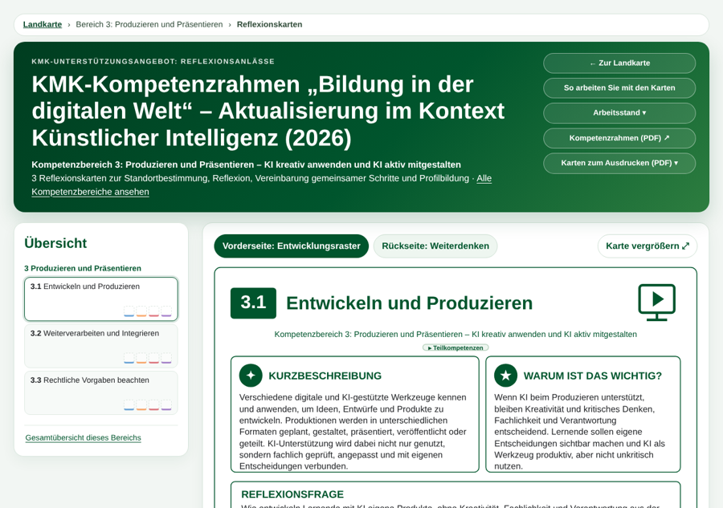
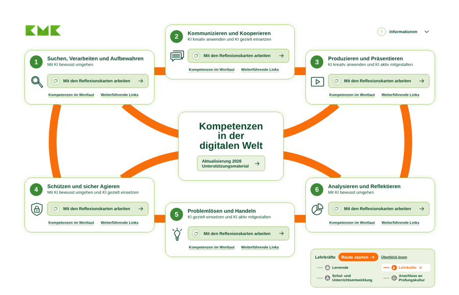
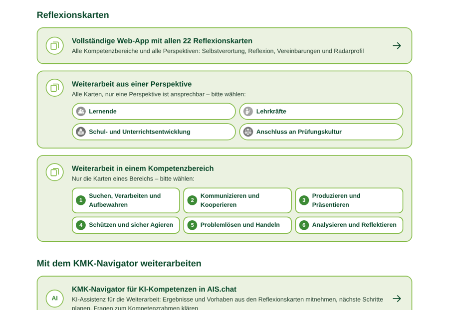

So arbeiten Sie mit der Landkarte
Die Landkarte zeigt den KMK-Kompetenzrahmen „Bildung in der digitalen Welt“; Aktualisierung im Kontext Künstlicher Intelligenz (2026): sechs Inseln für die sechs Kompetenzbereiche, Wege für die vier Perspektiven der Reflexionskarten, in der Mitte alles Material. Es gibt drei Zugänge.
Erklärfilm: So arbeiten Sie mit der Landkarte
Der Erklärfilm wird hier in Kürze ergänzt.
-

1Über eine Insel in einen Kompetenzbereich
„Mit den Reflexionskarten arbeiten“ öffnet die Karten dieses Bereichs: Selbstverortung im Entwicklungsraster, Reflexionsanlässe, Vereinbarungen und Radarprofil. Darunter finden Sie die Kompetenzen im Wortlaut des Beschlusses und weiterführende Links.
-

2Aus einer Perspektive durch alle Kompetenzbereiche
Unten rechts wählen Sie eine Perspektive: Lernende, Lehrkräfte, Schul- und Unterrichtsentwicklung oder Anschluss an Prüfungskultur. Die Wege färben sich, „Route starten“ öffnet alle Reflexionskarten aus genau dieser Perspektive.
-

3In der Mitte: Kompetenzrahmen, Reflexionskarten und KMK-Navigator
„Aktualisierung 2026 – Unterstützungsmaterial“ bündelt alles für die Weiterarbeit: den Kompetenzrahmen als PDF, die Reflexionskarten in allen Anwendungen und den KMK-Navigator für KI-Kompetenzen. Mit dieser KI-Assistenz in AIS.chat planen Sie auf Grundlage Ihrer Ergebnisse aus den Reflexionskarten die nächsten Schritte.